Explainable deep learning approaches for high precision early melanoma detection using dermoscopic images
Mahmud, M. A. A., Afrin, S., Mridha, M. F., Alfarhood, S., Che, D., Safran, M.
Read the paper ↗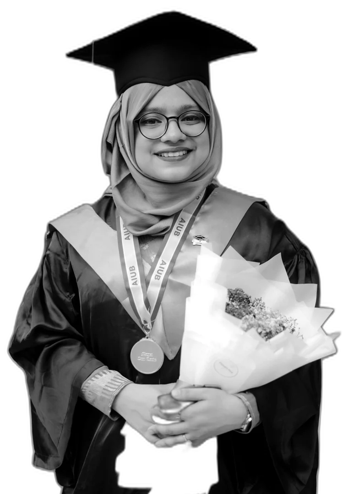
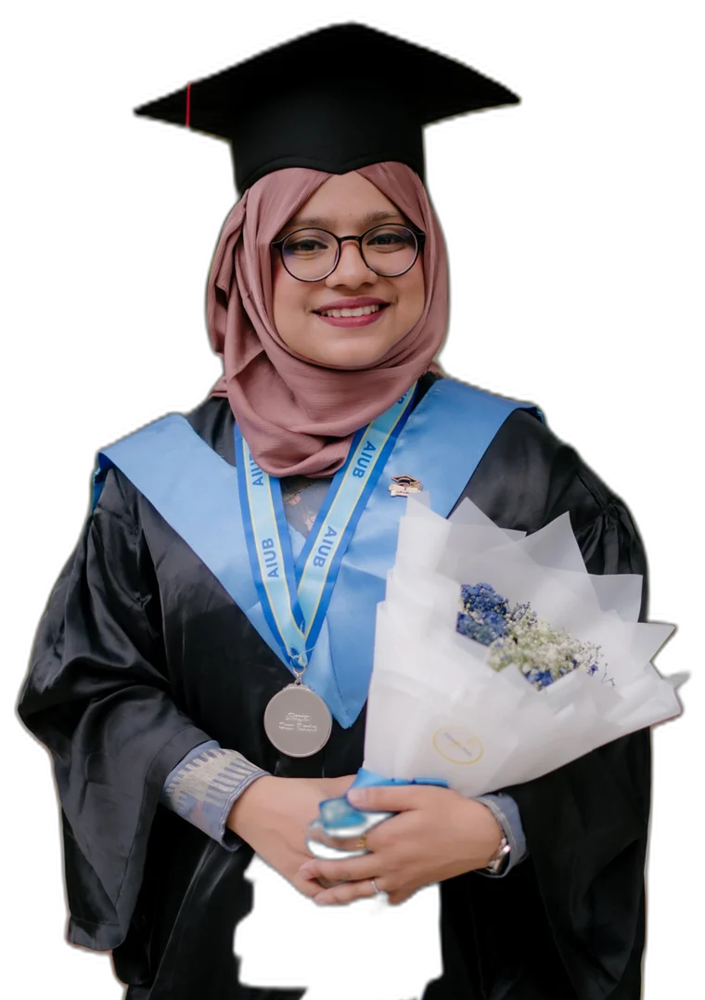
Lecturer & Researcher
Building explainable deep learning for medical images, and teaching the next generation of computer scientists.
View my work ↗/ About me
I'm a computer science educator who builds AI that can explain itself. My research turns medical images into decisions a clinician can check, and my classroom turns curious students into careful researchers.
Mahmud, M. A. A., Afrin, S., Mridha, M. F., Alfarhood, S., Che, D., Safran, M.
Read the paper ↗An explainable AI system for breast cancer detection, classification, segmentation and prognosis from medical images.
Medical imaging · Segmentation · Explainability
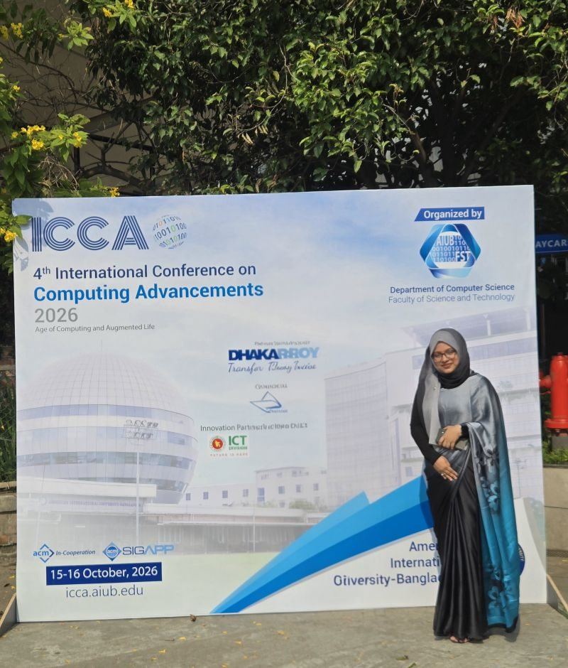
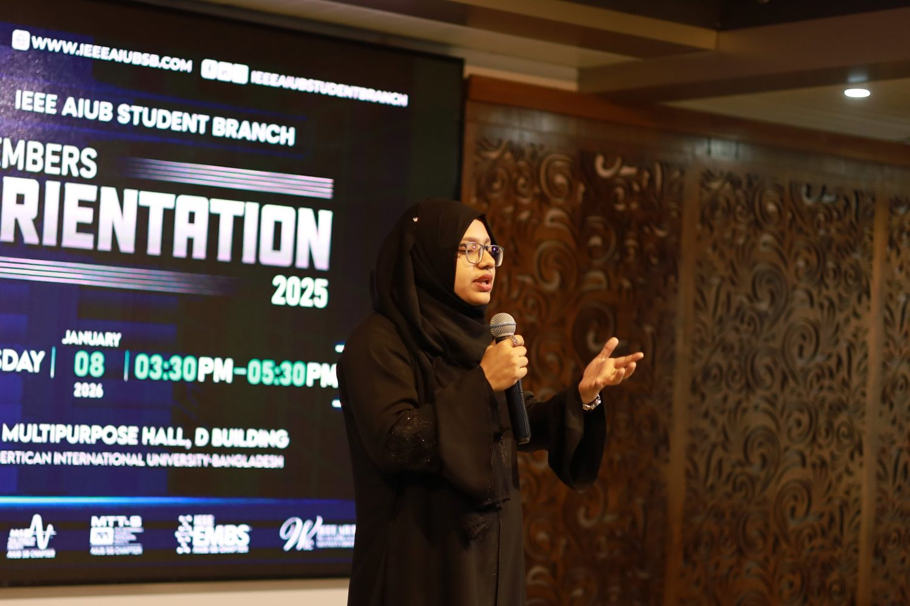
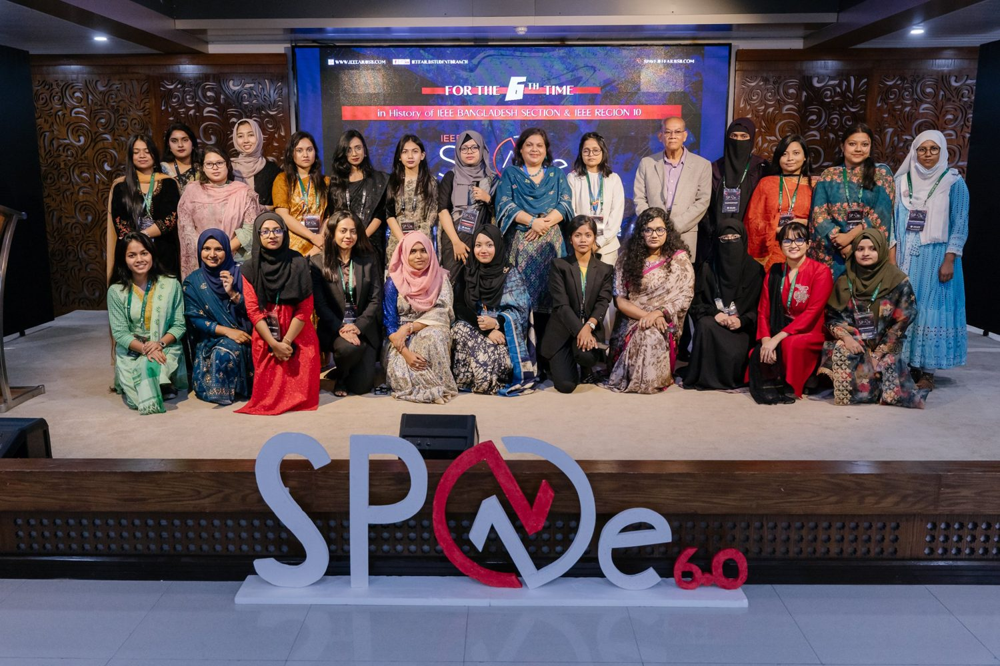
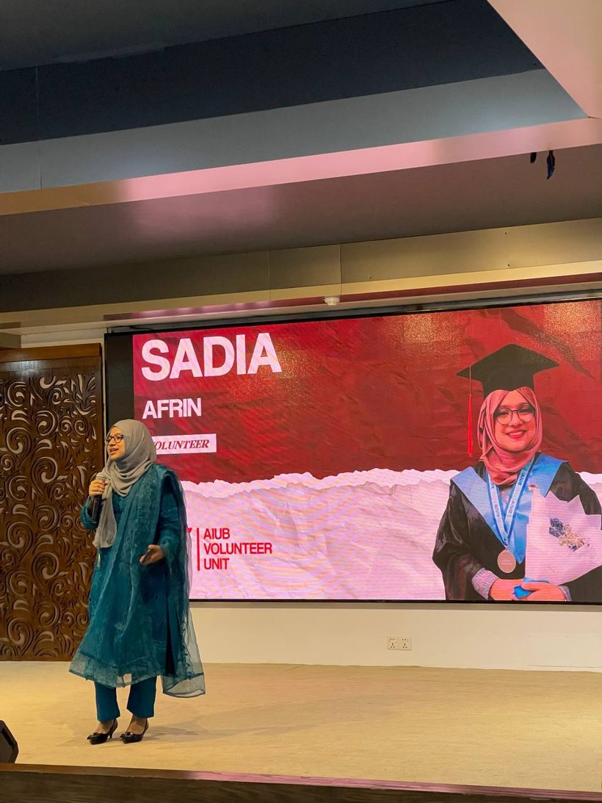
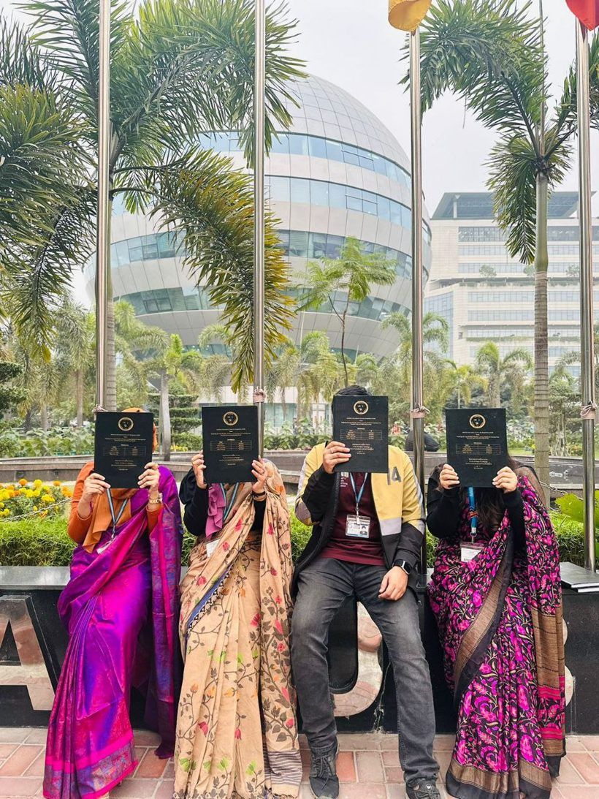
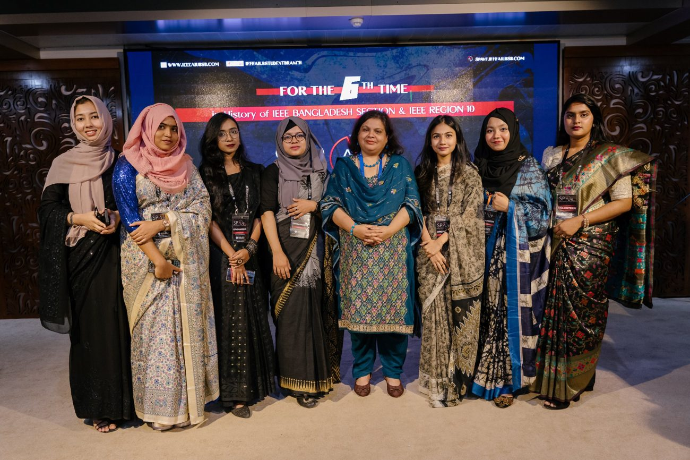
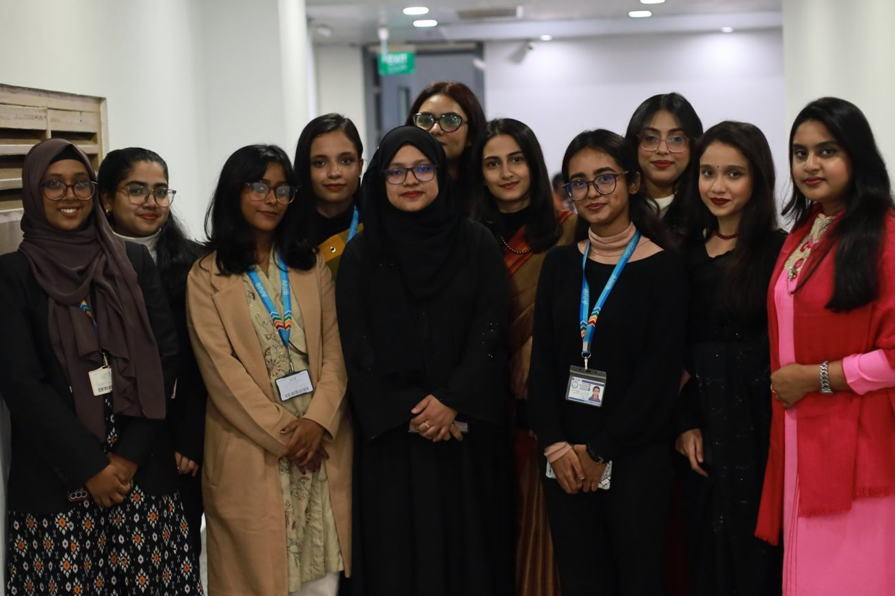
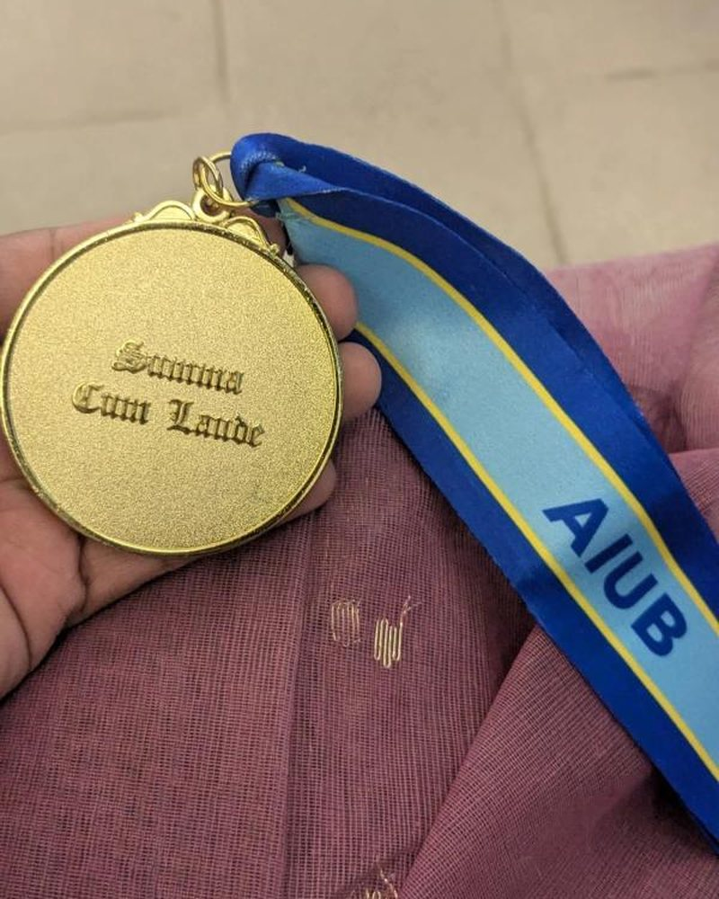
MSc in Intelligent Systems, AIUB, with Dean's List Honour
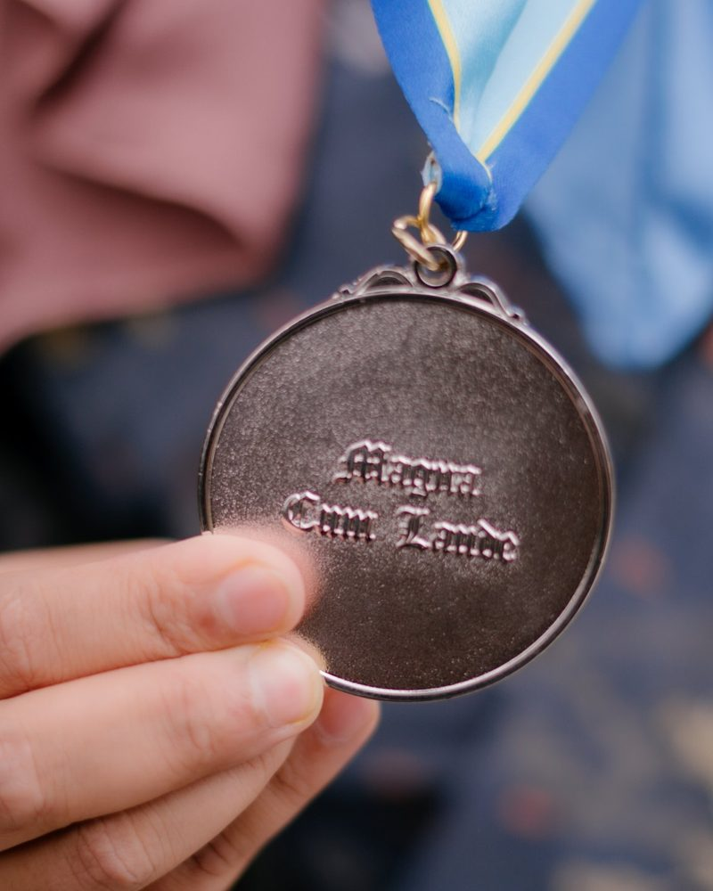
BSc in Computer Science and Engineering, AIUB, with Dean's List Honour
Also recognised
Work experience
Department of Computer Science and Engineering, World University of Bangladesh
Teaches Compiler Design, Computer Fundamentals, Computer Graphics, Data Structures, Introduction to Programming, Software Engineering, System Analysis and Design, and Web Technologies. Member of the departmental Thesis Committee and Curriculum Committee
Computer Vision and Bio-Robotics Lab, AIUB. Deep learning for healthcare and surveillance, under Dr. Debajyoti Karmaker
Education
American International University-Bangladesh. Thesis: explainable deep learning for liver cancer detection in CT
CGPA 3.96 · Summa Cum Laude · Gold MedalAIUB, Software Engineering major. Thesis: machine learning for food security in Bangladesh
CGPA 3.82 · Magna Cum Laude · Silver MedalPeer reviewer
2025 to now. Two manuscript reviews completed
Ongoing reviewer
4th International Conference on Computing Advancements, AIUB
Talks
New Members Orientation 2025, IEEE AIUB Student Branch, invited as an alumna
Memberships
Leadership and volunteering
IEEE AIUB Student Branch
IEEE SPAVe 5.0 and 6.0, event and registration coordination
Also WIE Day Ambassador
IEEE AIUB Student Branch, IEEE Computer Society Bangladesh Chapter, ICREST 2023 and the AIUB Volunteer Unit
Research collaboration, supervision or a talk on explainable AI in healthcare. Write to me.
s.aafrin.cse@gmail.com